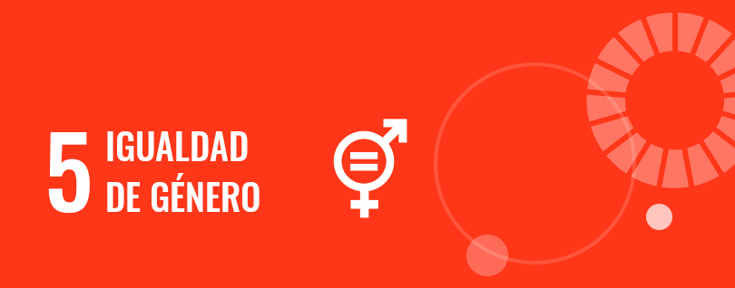

As ODS (Objetivos de Desenvolvimento Sustentável) foram criadas pela ONU em 2015 como um plano de ação global, formado por 17 objetivos e 169 metas, com o objetivo de promover o desenvolvimento sustentável até 2030.
Entre esses objetivos, destaca-se a ODS 5 – Igualdade de Gênero, que visa construir uma sociedade mais justa, inclusiva e igualitária, onde todas as pessoas tenham os mesmos direitos, oportunidades e respeito, independentemente do gênero.
A igualdade de gênero significa garantir que homens e mulheres tenham os mesmos direitos, oportunidades e tratamento, eliminando estereótipos e barreiras que limitam o potencial de ambos os gêneros. Para alcançá-la, é necessário implementar políticas públicas inclusivas, promover a educação igualitária, incentivar a participação de homens e equilibrar responsabilidades domésticas e profissionais.
Promover a igualdade de gênero é essencial para criar uma sociedade mais justa, com menos pobreza e violência, e maior participação democrática e econômica. No Brasil, apesar de avanços, as disparidades ainda persistem, principalmente no mercado de trabalho e na política.

Causas:
- Patriarcado: sistema que privilegia os homens e subordina as mulheres.
- Tradições culturais e religiosas: reforçam papéis limitados para as mulheres.
- Falta de acesso à educação e ao mercado de trabalho: impede independência financeira e participação social e política plena.
O que é Igualdade de Gênero?
Igualdade de Direitos
Todas as pessoas, independentemente do gênero, devem ter acesso igual à educação, saúde, trabalho, justiça e participação política.
Exemplo: leis e políticas públicas que protejam mulheres de discriminação e violência.
Igualdade de Oportunidades
Mulheres e meninas devem ter as mesmas chances de crescer profissionalmente e socialmente.
Exemplo: acesso a empregos dignos, salários justos, oportunidades de liderança e participação em áreas como ciência e tecnologia.
Respeito e Valorização
Garante que as vozes das mulheres sejam ouvidas e que elas possam participar de decisões que impactam suas vidas e comunidades.
Exemplo: representação política, participação econômica e social igualitária, reconhecimento de direitos e capacidades.
O que a ODS 5 busca combater para alcançar a igualdade:

Desigualdade no mercado de trabalho
- Mulheres ainda recebem salários menores que os homens, mesmo ocupando cargos iguais. Em média, ganham 20% menos que os homens globalmente.
- Há menos oportunidades de liderança e promoções para elas. Menos de 30% dos cargos de liderança no mundo são ocupados por mulheres.
- A sobrecarga da dupla jornada (trabalho formal + cuidados domésticos) dificulta a plena participação das mulheres. 2/3 do trabalho doméstico não remunerado no mundo é realizado por mulheres.

Violência de gênero
- A violência física, sexual e psicológica contra mulheres e meninas ainda é muito presente em todo o mundo. Nos últimos 3 anos, cerca de 88.900 mulheres foram vítimas de homicídios intencionais globalmente, das quais 55% por parceiros ou familiares.
- No Brasil, em 2024, foram registrados 2.007 casos de feminicídio ou tentativa.
- A impunidade e o medo de denunciar agravam o problema, tornando urgente a criação de políticas de proteção e conscientização.

Falta de acesso à educação e oportunidades
- Meninas ainda abandonam a escola devido a casamento precoce, gravidez ou pobreza. Estima-se que 640 milhões de meninas e mulheres foram casadas antes dos 18 anos.
- A representação feminina em áreas como ciência, tecnologia e política ainda é insuficiente. Apenas 30% das pesquisadoras no mundo são mulheres.
Papéis de gênero e machismo estrutural
- A sociedade ainda impõe padrões de comportamento e aparência às mulheres, limitando sua liberdade.
- O machismo estrutural dificulta que mulheres sejam reconhecidas e valorizadas em todos os espaços. Mulheres representam apenas 25% dos cargos políticos globais.
- Estereótipos de gênero continuam influenciando promoções e decisões no trabalho.
Sub-representação política
- Mulheres são minoria em cargos de decisão, como governos, parlamentos e empresas. Em média, ocupam menos de 30% dos cargos de liderança política no mundo.
- Isso limita a criação de políticas públicas voltadas à igualdade e reduz a participação feminina na tomada de decisões.

Direitos reprodutivos e saúde
- O acesso a serviços de saúde sexual e reprodutiva de qualidade ainda é limitado em muitos países. Cerca de 218 milhões de mulheres em idade fértil não têm acesso a métodos contraceptivos modernos.
- Leis restritivas e falta de informação impedem que mulheres tomem decisões sobre o próprio corpo, comprometendo sua autonomia e bem-estar.
Metas da ODS 5
- Acabar com todas as formas de discriminação contra mulheres e meninas.
- Eliminar violência e exploração sexual, incluindo casamento infantil e forçado.
- Garantir participação plena das mulheres na política, economia e liderança.
- Assegurar igualdade de acesso a recursos econômicos e oportunidades.
- Promover acesso universal à saúde reprodutiva e direitos sexuais.
- Eliminar práticas culturais prejudiciais e estereótipos de gênero.
- Fortalecer políticas públicas que apoiem a igualdade de gênero.

Como Contribuir
- Respeitar e valorizar mulheres em todos os espaços.
- Combater atitudes e comentários machistas.
- Denunciar violência de gênero (ex.: Disque 180 no Brasil).
- Incentivar meninas e mulheres a estudar e participar de atividades sociais.
- Divulgar informações sobre igualdade de gênero e conscientizar outras pessoas.
- Apoiar campanhas e projetos sociais voltados à promoção da igualdade.